pascal-bin — FUSE
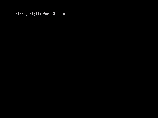
bases — SSX · TZX · bases.pas
burkadj — SSX · TZX · burkadj.pas
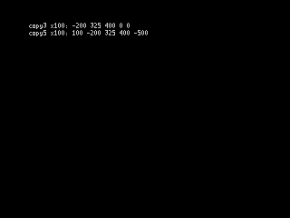
burkcopy — SSX · TZX · burkcopy.pas
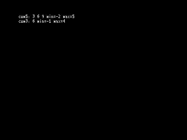
burkcum — SSX · TZX · burkcum.pas
burkdot — SSX · TZX · burkdot.pas
burkflip — SSX · TZX · burkflip.pas
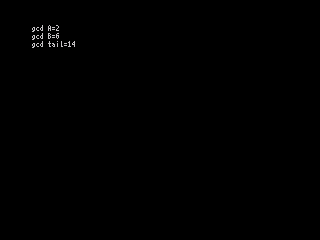
burkgcd — SSX · TZX · burkgcd.pas
burkl1 — SSX · TZX · burkl1.pas
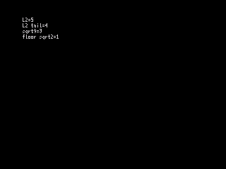
burkl2 — SSX · TZX · burkl2.pas
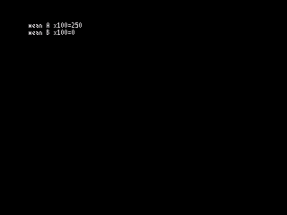
burkmean — SSX · TZX · burkmean.pas
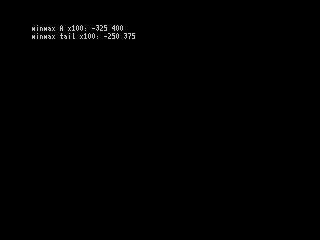
burkmin — SSX · TZX · burkmin.pas
burkmm — SSX · TZX · burkmm.pas
burkprime — SSX · TZX · burkprime.pas
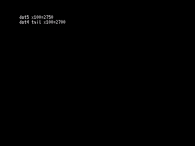
burkreal — SSX · TZX · burkreal.pas
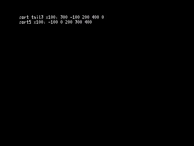
burkrsrt — SSX · TZX · burkrsrt.pas
burkscale — SSX · TZX · burkscale.pas
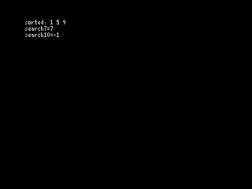
burksort — SSX · TZX · burksort.pas
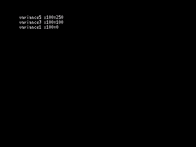
burkvar — SSX · TZX · burkvar.pas
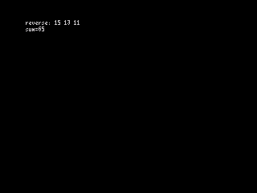
burkvec — SSX · TZX · burkvec.pas
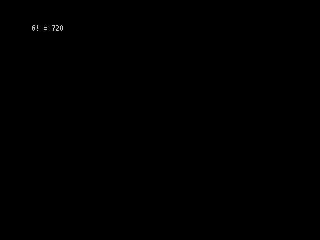
factorial — SSX · TZX · factorial.pas
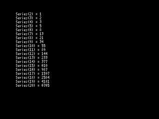
fibarray — SSX · TZX · fibarray.pas
 fiblarge — SSX · TZX · fiblarge.pas
fiblarge — SSX · TZX · fiblarge.pas
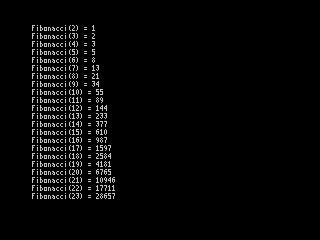
fibopt — SSX · TZX · fibopt.pas
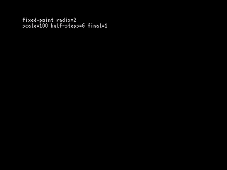
machar — SSX · TZX · machar.pas
prime — SSX · TZX · prime.pas